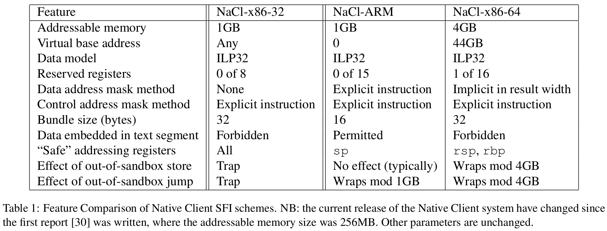

Portable Native Client 1: control flow and memory integrity with average performance overhead of under 5% on ARM and 7% on x86-64.
Control+store SFI on x86-32, which we considered excessive, indicates about 25% overhead.
“As we continued our exploration of ARM SFI and sought to understand ARM behavior relative to x86 behavior, we could not adequately explain the observed performance gap between ARM SFI at under 10% overhead with the overhead on x86-32 in terms of instruction set differences. With further study we understood that the prior implementations for x86-32 may have suffered from suboptimal instruction selection and overly pessimistic alignment.”
On ARM, only 16-bit Thumb and 32-bit ARM instructions.
ARM binaries commonly include a number of read-only data embedded in the text segment. Such data in executable memory regions must be isolated to ensure it cannot be used to invoke system call instructions or other instructions incompatible with our sandboxing scheme.
Indirect control flow and memory references must be constrained to within the untrusted memory region, achieved through sandboxing instructions.
Page-table protection would be used to prevent the untrusted code from manipulating trusted data; SFI is still required to enforce control flow instructions.
Hence, page protection only avoids data SFI; the control flow SFI persists.
But depends on OS-based protection mechanisom. This OS interaction is complicated y the requirement for multiple threads that transition independently between untrusted and trusted execution.
High complexity and overhead, with small potential performance gain ==> Not suitable.

All use alignment masks on control flow target addresses;
Data mask
Data type: ILP32
Instruction sequences
Address space layout
ARM designs:
ARM goals:
Extension to Wahbe et al. 2
Code layout: 16 bytes bundles/four instrs; All ARM instructions, no Thumb; data bundles starting with invalid offset to prevent execution as code.
Validation:
bx, r0 and their conditional equivalents; most significant 2 bits cleared; 4 least significant bits cleared; bic r0, r0, #0xc000,000f
bx r0
/*
# pop {pc} is replaced with
*/
pop {lr}
bic lr, lr, 0xc000,000f
bx lrNote above code: data dependency between bx branch and masking instruction. This pattern(generating an address via the ALU and immediately jumping to it) is sufficiently common in ARM code that the modern ARM implementations[^3] can dispatch the sequence without stalling.
Data Stores: check within 1 GB.
tst r0, #0xc0000000
streq r1, [r0, #12]==> use tst rather than bic here avoids a data dependency between the guard instruction and the store, eliminating a two-cycle address-generation stall on Cortex-A8 that would otherwise triple the cost of the added instruction.
(Again this is ARM’s fully predicated instruction set).
Guard page: immediate displacement: $\pm$ 4096 bytes (only base-plus-displacement addressing is allowed, forbide multiple registers), can be used to overflow/underflow 1GB by 4096 bytes; use guard page to trap such.
Stack SP: within 1 GB.
LLVM 2.6 for ARM; faster than GCC.
x86-64 features:
Rules:
If you could revise
the fundmental principles of
computer-system design
to improve security...
... what would you change?